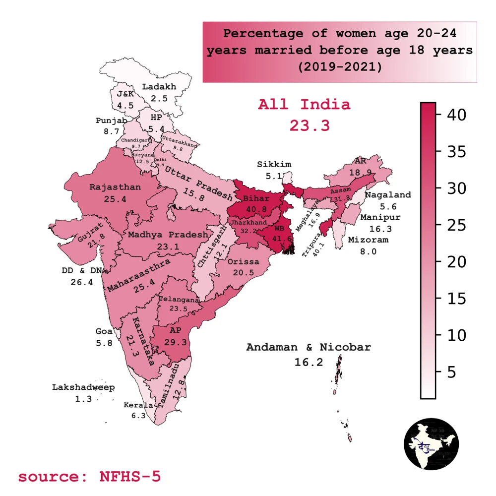

Desi
Data
Map gallery
Data
About me
Follow on Instagram
Instagram
Women aged 20–24 who married before 18, 2019–21
India · 2019–21

[TODO: add 2–3 line takeaway]
Source
National Family Health Survey (NFHS-5)
Download data
child_marriage.csv ↓
Download map
cm_labeled.webp ↓